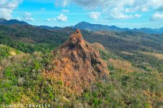

Mountains and Nature
📍 Notable mountains in Antique Province
Antique’s coastline stretches along the clear waters of the Sulu Sea, offering a collection of serene beaches and unspoiled islands that remain among the province’s most treasured attractions. Unlike heavily commercialized destinations, many of Antique’s coastal areas are still quiet and less crowded, giving visitors the chance to enjoy nature in a more peaceful and authentic setting.
The mountains of Antique offer a perfect escape for nature lovers and adventure seekers alike. Towering peaks, rolling hills, and thick tropical forests create a stunning backdrop for outdoor activities such as trekking, hiking, camping, and wildlife exploration. Trails vary from beginner-friendly paths to more challenging climbs, allowing both casual visitors and experienced hikers to enjoy the province’s natural terrain.
One of the most notable peaks is Mt. Madja-as, often referred to as the “sacred mountain” of Antique. It is rich in local folklore and is considered one of the highest mountains in Panay Island. Climbing Mt. Madja-as offers not only a physical challenge but also rewarding panoramic views and a deeper connection to the province’s cultural heritage. Other mountains, such as Mt. Nangtud, are also popular among trekkers for their scenic trails and unique biodiversity.
Beyond the high peaks, Antique is also home to protected areas like Sibalom Natural Park, a lush forest reserve where visitors can experience the beauty of lowland rainforests, rivers, and endemic plant and animal species. These areas highlight the importance of preserving Antique’s natural environment while allowing visitors to appreciate its richness responsibly.
Exploring the mountains of Antique is more than just an adventure—it is an opportunity to reconnect with nature, breathe in fresh mountain air, and experience the peacefulness that comes from being surrounded by untouched wilderness. Whether you are hiking to a summit, walking through forest trails, or simply enjoying the view, Antique’s mountains offer a refreshing and unforgettable experience.

Mt. Madja-as
The highest peak in Antique and one of the tallest in Panay Island. Known as the “Sacred Mountain,” it is rich in folklore and history. Popular for trekking and panoramic views.

Mt. Nangtud
The second highest mountain in Panay Island. Offers challenging trails and diverse wildlife. Known for misty peaks and scenic forests.

Mt. Aningalan
Famous among hikers for its scenic ridge and panoramic views of surrounding mountains and rivers. A medium-difficulty climb suitable for adventurous day trekkers.

Mt. Igcoron
A less-explored mountain known for its quiet trails and natural forest cover. Ideal for hikers seeking solitude and untouched landscapes.

Mt. Baloy
A medium-altitude mountain in Sibalom Natural Park. Surrounded by lush forest and rich biodiversity. Great for eco-trekking and bird watching.

Mt. Igmatongtong
Lesser-known but scenic peak with panoramic views. Popular among local hikers seeking quieter trails.